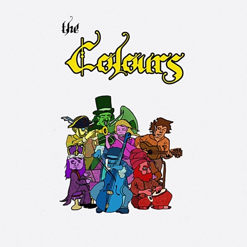

Albums
An archive of the Jestamang universe across time.
Quarter Days
The four seasons

Zodiac
Children
Spring Equinox

New Æon
Kek-Buh
Summer Solstice

Niga Denots
The Ace of Chase
Fall Equinox

Jestress Melody
Cricket Om
Winter Solstice
2K2323
Jan 23, '23 – Dec 31, '23

The Naples Society of the Temple of Psychick Youth
J.R. Mason
January 23, 2023

Peter Thy Godfather
Father P. Journee
February 23, 2023

Covers the Taste
Blue Jays
March 23, 2023

Sleep Cycle
Mutt Tour
April 23, 2023

The Ace of Chase
Venus and the Flytrap
May 23, 2023

Big Boy, New Cat. Records
Big Boy, New Cat. Records
June 23, 2023

Jonas Kyle Meets The Perfect Trip
Jonas Kyle
July 23, 2023

Summer O' Sahr
The Boston Society of the Temple of Psychick Youth
August 23, 2023

ꓘ
Atlas Is Alice Lillenger
September 23, 2023

8slush
Ode to Bonnie
October 23, 2023

Jestawomang
The Ace of Chase
November 23, 2023

Xmas 23
Hodge
December 23, 2023

Revolution Epilogue: 2K2321–2K2323
Jestamang
December 31, 2023
2K2123
Jan 23, '21 – Mar 23, '21

You and the 7.5 Evils of the World
You and the 7.5 Evils of the World
January 23, 2021

El Santo De Gangster Volume II
Big Smoke, lil Skeez, DEW, Sno Bunni
February 23, 2021

Ode to Bonnie
Ode to Bonnie
March 23, 2021

I Can Touch the Revolution From My Home
The Perfect Trip
April 23, 2021

Talkin' Jesus
Father P. Journee
May 23, 2021

Green House
Blue Jays
June 23, 2021

The Boston Society of the Temple of Psychick Youth
The Boston Society of the Temple of Psychick Youth
July 23, 2021

Alissa Orange
Alissa Orange
August 23, 2021

The Woodland Singapore Orchestra
The Woodland Singapore Orchestra
September 23, 2021

The Colours
The Colours
October 23, 2021

Sounds Across the World
Sounds Across the World
November 23, 2021

Ball of Energy
Mike 55
December 23, 2021

Babylon's Final Hours
J.R. Mason
January 23, 2022

Venus and the Flytrap
Venus and the Flytrap
February 23, 2022

Covers the Greats
The Perfect Trip
March 23, 2022
NONS
Prologue

Psycho Classical
Caleb Mars Hickman
November 11, 2017

The Magic Eye
Caleb Mars Hickman
April 20, 2018

Cell Life
Mutt Tour
September 14, 2018

The Perfect Trip
The Perfect Trip
February 22, 2020

Hit!
Mutt Tour
June 21, 2020